Panduan Komprehensif Mengenali Tubuh, Pubertas, Relasi Sehat, dan Perlindungan Diri
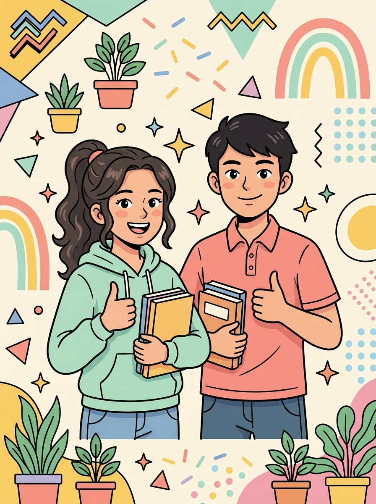
Panduan Komprehensif Kesehatan Reproduksi Remaja: Bahasa Santai, Ramah, Ilmiah, dan Bebas Tabu!
Jadikan buku ini sahabat terbaik perjalanan kedewasaanmu tanpa beban dan rasa malu!
“Hari ini aku memilih untuk menghargai dan merawat tubuhku. Aku berhak mendapatkan informasi kesehatan reproduksi yang benar, ilmiah, dan bertanggung jawab. Aku berani menjaga batasan diri dan siap mencari bantuan tepercaya saat membutuhkan perlindungan.”
Buku ini adalah sarana edukasi mandiri, bukan pengganti diagnosis medis dokter. Jika merasakan keluhan nyeri atau infeksi, segera periksakan ke Puskesmas PKPR terdekat atau hubungi hotline Kemenkes 119 ext. 8.
Fondasi Tubuh, Perkembangan Pubertas & Relasi Sehat (Bab 01–16)
Perlindungan Diri, Hukum, Ruang Digital & Akses Bantuan (Bab 17–30)
Sahabat ngobrol santai memahami masa transisi pubertas dan kesehatan reproduksi.
Hai kamu! Selamat datang di buklet KESPRO EXCELLENCE. Buklet ini hadir sebagai teman ngobrol yang asik, hangat, dan tepercaya buat ngebantu kamu memahami segala perubahan diri selama masa remaja, belajar mengambil keputusan bijak, terhindar dari pergaulan berisiko, dan tahu ke mana harus mencari bantuan saat butuh teman cerita.
Catatan Penting: Materi dalam buklet ini bersifat edukatif ya. Jadi, kalau kamu merasakan keluhan kesehatan tertentu, tetap periksakan langsung ke dokter atau fasilitas kesehatan terdekat (seperti Puskesmas PKPR).
Bukan cuma organ intim: kespro adalah kesehatan fisik, mental, dan sosial yang utuh.
Kesehatan reproduksi (sering disingkat kespro) adalah keadaan sehat dan sejahtera yang utuh—mencakup fisik, mental, dan kehidupan sosial kita—seputar sistem, fungsi, dan proses reproduksi.
Jadi, kespro itu bukan cuma sekadar lagi nggak sakit atau nggak kena infeksi, melainkan saat kamu bener-bener ngerasa aman, nyaman, bahagia, dan berdaya penuh atas tubuhmu sendiri!
Perubahan fisik, emosi, sosial, dan cara berpikir yang dinamis saat beranjak dewasa.
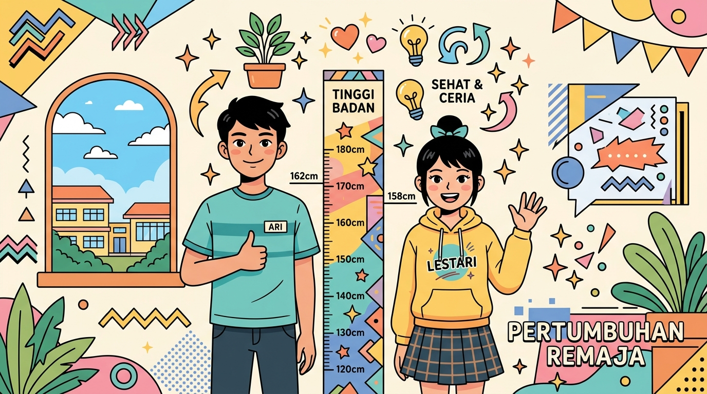
Masa remaja itu masa transisi yang luar biasa karena tubuh dan pikiranmu lagi bertumbuh super pesat. Yang paling perlu diingat: waktu dan kecepatan perubahan tiap orang itu beda-beda, dan itu wajar banget!
6 langkah cerdas mengambil keputusan bijak sebelum bertindak.
Nilai hidup adalah prinsip berharga yang jadi kompas internalmu saat menentukan tindakan. Nilai ini terbentuk dari keluarga, ajaran agama, budaya, dan pengalaman hidupmu sendiri.
Wajar kalau prinsip tiap orang berbeda, tapi punya prinsip yang kokoh bakal selalu menjagamu tetap selamat dari godaan pergaulan berisiko.
Cara memandang, menilai, dan mencintai dirimu sendiri di tengah gempuran medsos.
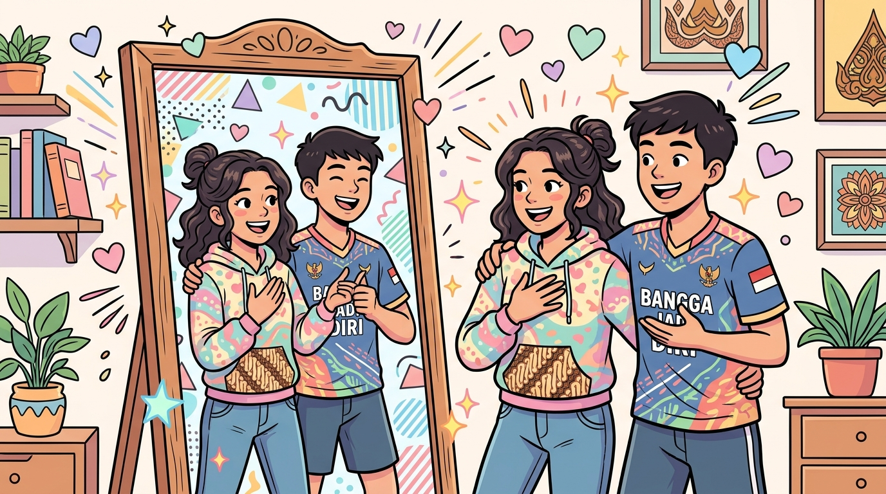
Konsep diri adalah caramu memandang, menilai, dan menghargai dirimu sendiri. Konsep diri yang sehat lahir dari rasa syukur, penerimaan diri, serta kemauan terus berkembang.
Garis batas aman kenyamanan fisik, privasi, dan barang pribadimu.
Batasan diri (personal boundaries) adalah garis batas tak terlihat yang kamu tentukan untuk menjaga rasa aman, kenyamanan, privasi, barang pribadi, serta tubuhmu saat berinteraksi dengan orang lain.
Izin yang diberikan secara sadar, jelas, dan tanpa paksaan: 6 prinsip utama persetujuan.
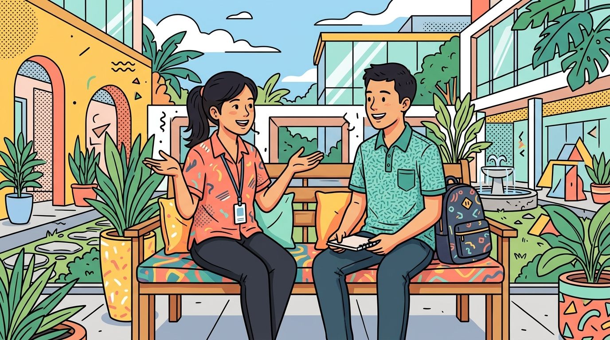
Persetujuan (consent) adalah izin yang diberikan secara sadar, sukarela, jelas, dan tanpa paksaan. Prinsip ini berlaku luas: mulai dari kontak fisik, pinjam barang pribadi, membaca isi chat, hingga mengunggah foto teman ke media sosial.
Kenali Green Flags hubungan suportif dan waspadai Red Flags pasangan posesif.
Mau dalam pertemanan (circle), keluarga, atau hubungan asmara, relasi yang sehat selalu berfondasikan rasa saling respek, komunikasi terbuka, kejujuran, saling mendukung impian, dan memberi ruang buat tetap menjadi dirimu sendiri.
Sampaikan isi pikiran dan perasaan secara jujur tanpa kasar dengan formula 'Aku'.
Komunikasi asertif membantu kamu menyampaikan isi pikiran, perasaan, dan batasan pribadimu secara percaya diri, jujur, dan santun—tanpa terdengar kasar dan tanpa merendahkan orang lain.
Proses alami tubuh berkat hormon menuju kedewasaan biologis: growth spurt hingga perubahan suasana hati.
Pubertas adalah masa saat tubuhmu berproses menuju kedewasaan biologis berkat peran hormon-hormon alami (estrogen, progesteron, dan testosteron). Waktu mulai dan urutan perubahannya pada tiap orang bisa berbeda-beda—semuanya normal!
Perbedaan tanda biologis pubertas khas cewek vs cowok secara objektif dan ilmiah.
Hormon di dalam tubuh cewek dan cowok memicu sinyal perkembangan yang berbeda. Mari kita pelajari secara ilmiah tanpa rasa malu atau tabu!
Pelajari struktur organ reproduksi internal dan eksternal perempuan beserta fungsi biologisnya.
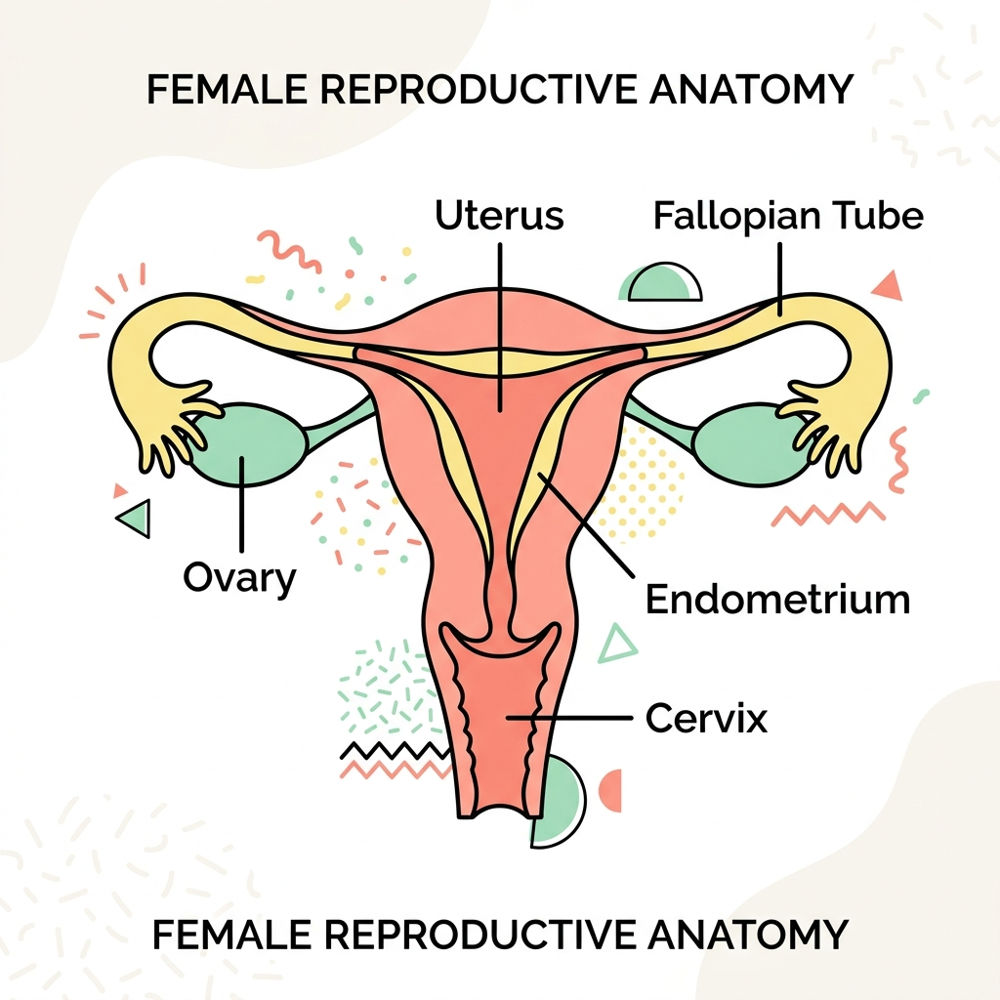
Mengenal organ reproduksi luar dan dalam laki-laki, peran hormon testosteron, serta produksi sperma.
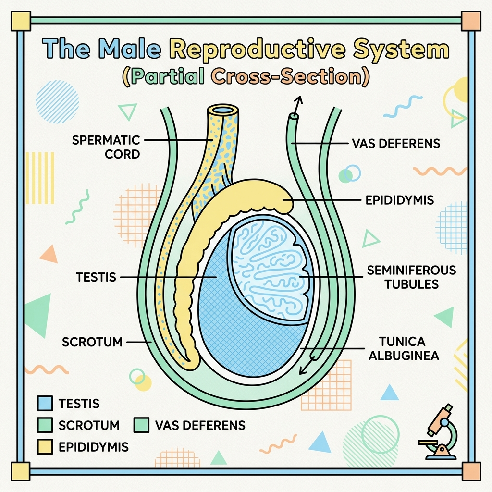
Siklus alami bulanan perempuan, panduan ganti pembalut, redakan kram, dan catat kalender haid.
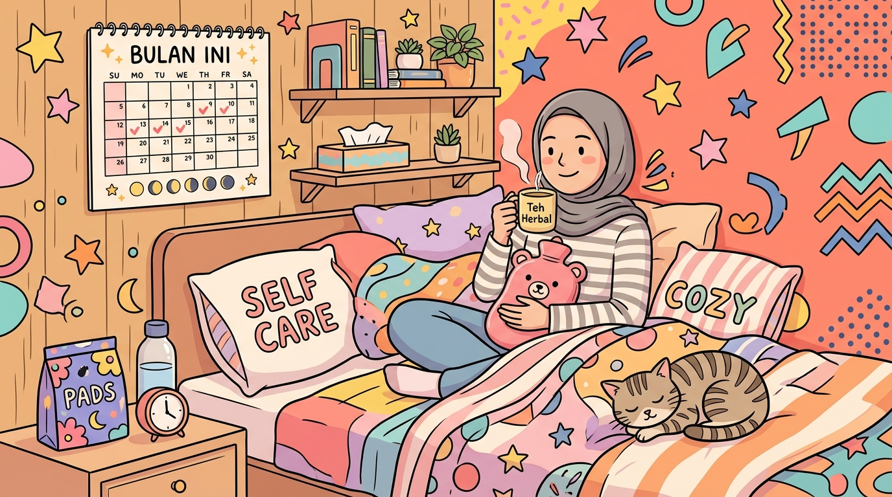
Menstruasi (haid) adalah proses alami bulanan tubuh perempuan saat lapisan dinding dalam rahim (endometrium) yang kaya pembuluh darah meluruh dan keluar melalui vagina karena sel telur tidak dibuahi.
Mekanisme alami tubuh mengeluarkan kelebihan cairan sperma secara biologis: tenang dan jaga kebersihan.
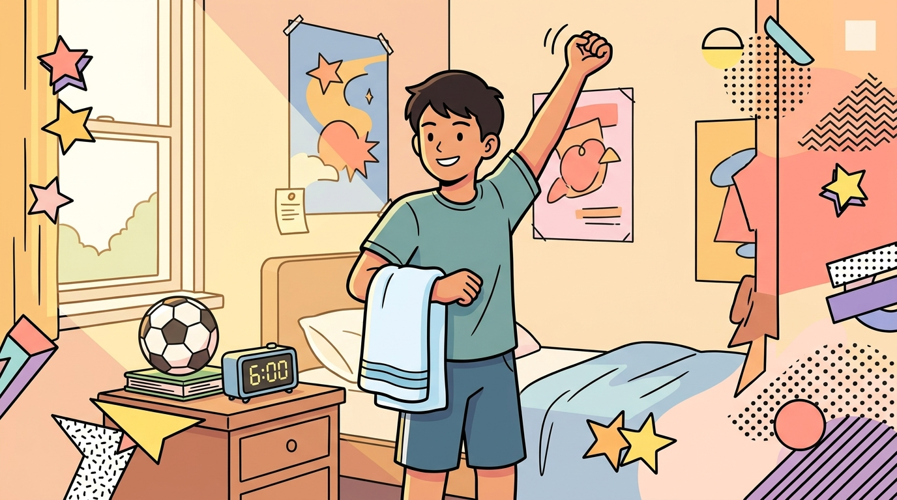
Mimpi basah (emisi nokturnal) adalah peristiwa keluarnya cairan semen (air mani) saat seorang laki-laki sedang tidur. Peristiwa ini adalah tanda normal dan sehat bahwa testis sudah mulai memproduksi sel sperma!
Kebiasaan higienis harian, batasan GGL resmi Kemenkes, dan panduan memilih makanan sehat.
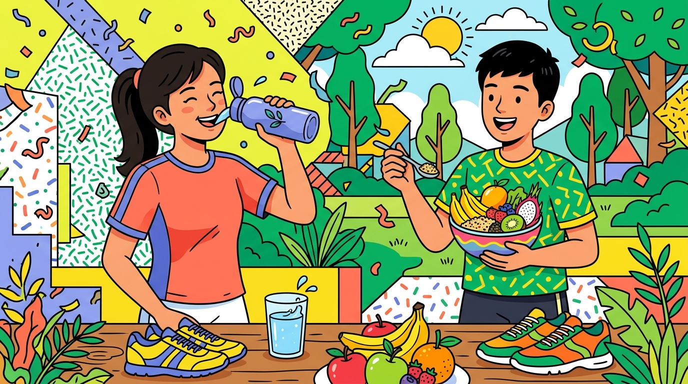
Tubuh remajamu sedang bekerja ekstra keras membangun massa tulang, otot, dan organ dewasa. Menjaga kebersihan dan mengatur asupan nutrisi adalah investasi terbaikmu seumur hidup!
Proses biologis pembuahan (fertilisasi) dan fakta nyata data SKI 2023 kehamilan usia remaja.
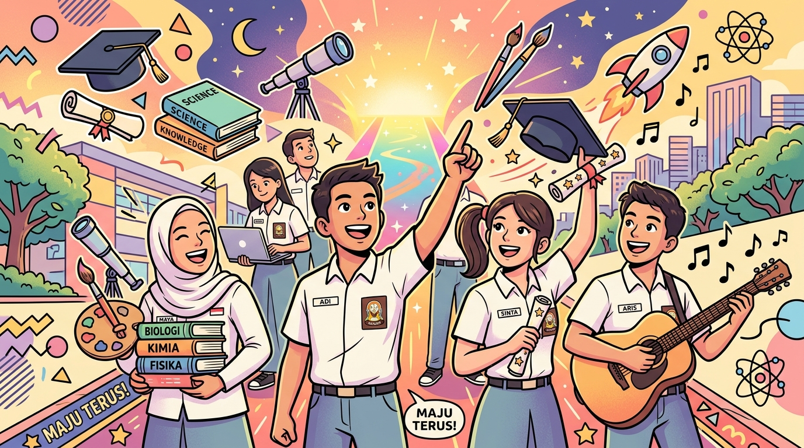
Kehamilan terjadi saat jutaan sel sperma berenang masuk dan salah satunya berhasil membuahi sel telur yang matang di saluran tuba falopi (proses fertilisasi). Sel telur yang telah dibuahi kemudian menempel di dinding rahim (implantasi) dan tumbuh menjadi janin selama sekitar 9 bulan.
Kehamilan di usia terlalu dini membawa risiko medis berat karena panggul remaja perempuan belum matang sempurna (berisiko pendarahan, persalinan macet, preeklamsia, berat bayi lahir rendah/BBLR, dan stunting). Selain risiko fisik, ada beban psikologis dan risiko terputusnya pendidikan sekolah.
Menunda hubungan seksual (Abstinence) sebagai proteksi 100% dan respon aman saat telat haid.
Pengetahuan tentang pencegahan kehamilan yang tidak diinginkan (KTD) adalah bagian penting dari keterampilan hidup remaja agar kamu tidak kehilangan masa depan dan terhindar dari trauma psikologis.
Kenali gejala bahaya IMS (cairan tidak wajar, luka lecet, nyeri) dan larangan mengobati diri sendiri.
Infeksi Menular Seksual (IMS) adalah penyakit infeksi yang menular melalui hubungan seksual (vaginal, anal, maupun oral) tanpa pengaman dengan orang yang terinfeksi.
Banyak IMS pada tahap awal sama sekali tidak bergejala, namun jika dibiarkan tanpa pengobatan dokter bisa memicu kemandulan, kerusakan organ dalam, hingga komplikasi fatal.
Perbedaan HIV & AIDS, data temuan 63.707 kasus baru Kemenkes 2024, jalur transmisi dan mitos keliru.
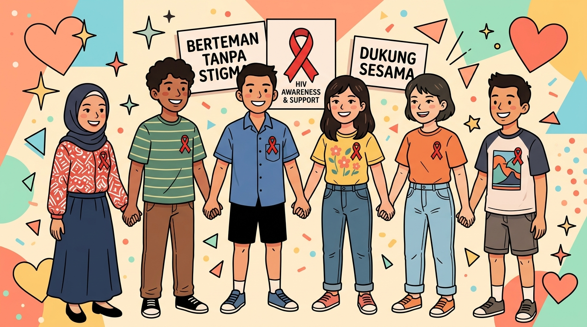
HIV (Human Immunodeficiency Virus) adalah virus yang melemahkan sistem imun tubuh dengan merusak sel darah putih (CD4). Sedangkan AIDS (Acquired Immuno Deficiency Syndrome) adalah kumpulan gejala penyakit akibat menurunnya kekebalan tubuh secara drastis bila HIV tidak diobati.
Bahasa yang merangkul (stop victim blaming) dan 4 langkah nyata menciptakan lingkungan aman bagi ODHIV.
Stigma adalah cap buruk atau prasangka negatif terhadap seseorang, sedangkan diskriminasi adalah perlakuan tidak adil yang timbul akibat prasangka tersebut. Stigma buruk membuat orang takut memeriksakan diri dan mengurung diri dari pertolongan!
Seks biologis kodrati vs gender konstruksi sosial: bongkar stereotip yang membatasi potensi remaja.
Biar nggak salah paham, yuk kenali bedanya! Istilah Seks dan Gender sering disamakan, padahal maknanya sangat berbeda dalam ilmu kesehatan dan sosial.
Bentuk kekerasan fisik, verbal, seksual, online (TPKS): tanggung jawab sepenuhnya di pundak pelaku!
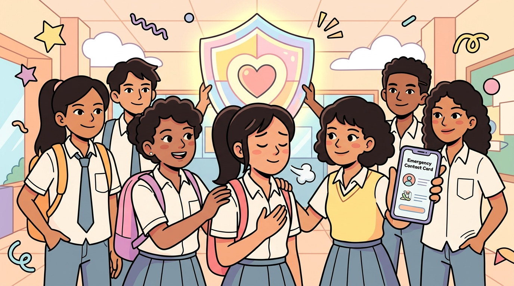
Kekerasan bisa berupa pukulan fisik, makian verbal yang meremukkan harga diri, pemaksaan kontak seksual, hingga kekerasan berbasis gender online (seperti ancaman menyebarkan foto intim atau pelecehan di DM medsos).
Siapa pun bisa menjadi korban, dan tidak ada satu orang pun di dunia ini yang pantas diperlakukan kasar atau dilecehkan!
4 pilar rencana kesiapsiagaan darurat: tempat aman, kontak darurat, kode rahasia, dan nomor hotline.
Saat situasi darurat atau panik tiba-tiba terjadi, otak kita sering kali 'blank' atau membeku. Dengan menyiapkan Safety Plan (Rencana Keselamatan) dari sekarang, kamu tahu persis apa yang harus dilakukan tanpa ragu!
Lawan perundungan, stop jadi bystander pasif, dan terapkan metode 4 langkah menenangkan emosi meluap.
Perundungan (bullying)—baik berupa ejekan fisik di sekolah maupun cyberbullying di kolom komentar media sosial—bisa mengoyak kesehatan mental. Kamu punya hak asasi untuk merasa aman dan dihormati di mana pun berada!
Lindungi privasi online, hindari pemerasan konten intim (sextortion), dan uji pertanyaan 4 detik.
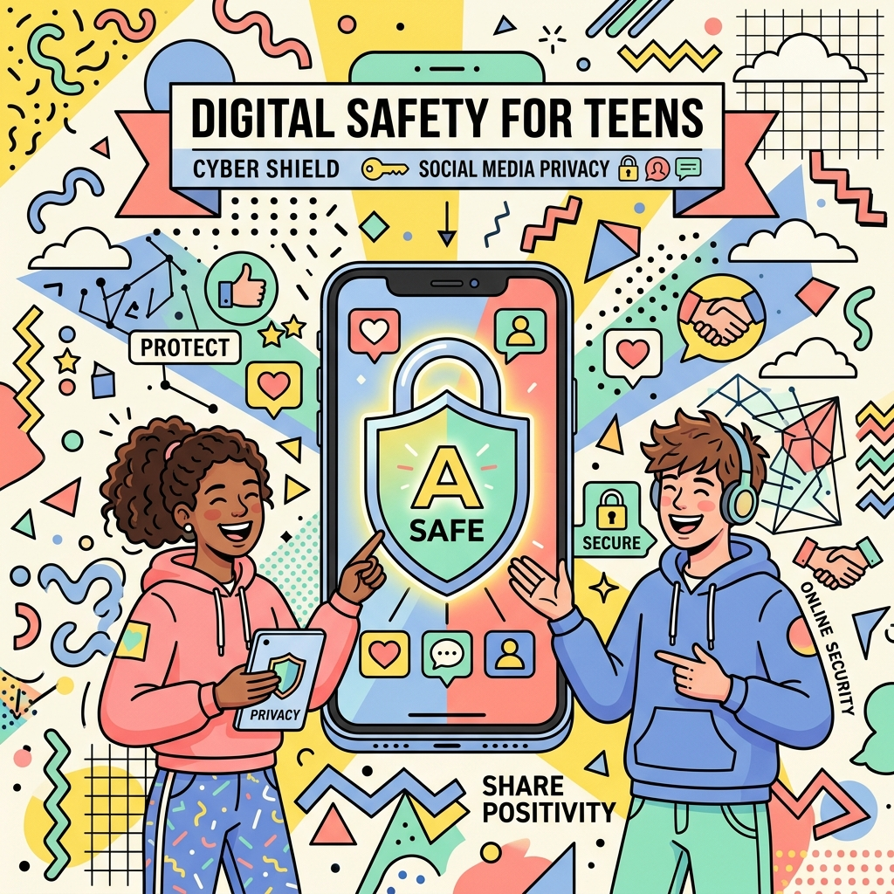
Internet dan medsos emang asik banget buat eksplorasi wawasan dan seru-seruan bareng teman. Tapi di balik itu, ada bahaya nyata: hoaks, penipuan online, pelanggaran privasi, hingga pemerasan dengan foto intim (sextortion).
Lindungi fungsi otak dari narkoba dan miras: jurus jitu hadapi peer pressure dan kalimat menolak keren.
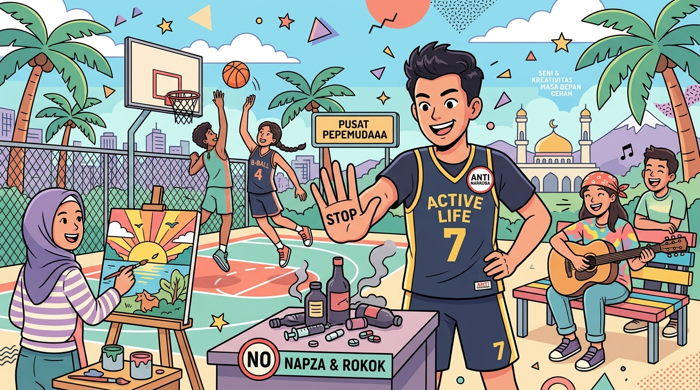
NAPZA (Narkotika, Psikotropika, dan Zat Adiktif lainnya—termasuk miras dan rokok/vape) bisa merusak sel-sel otak yang sedang berkembang, mengaburkan akal sehat, dan merontokkan kontrol diri.
Kondisi hilang kendali ini membuat seseorang sangat mudah terjebak dalam pergaulan seks berisiko, kecelakaan, kekerasan, hingga tertular virus mematikan.
Akses gratis ramah remaja: Puskesmas PKPR, ruang BK, hotline SAPPA 129, dan Sejiwa 119.
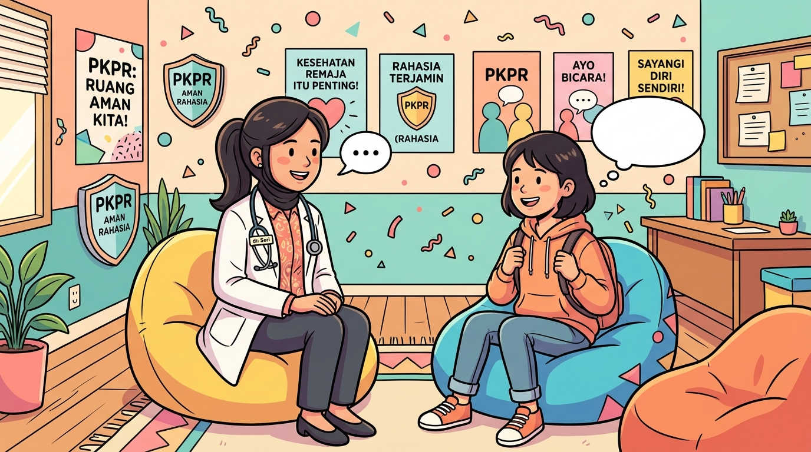
Menghadapi lika-liku pubertas dan masalah pergaulan emang kadang bikin bingung atau overthinking. Ingat, kamu nggak perlu menanggung semuanya sendirian!
Pemerintah Indonesia menyediakan program PKPR (Pelayanan Kesehatan Peduli Remaja) di hampir seluruh Puskesmas di tanah air.
Panduan khusus orang tua, guru, dan konselor: 7 langkah mendengarkan aktif tanpa menghakimi.
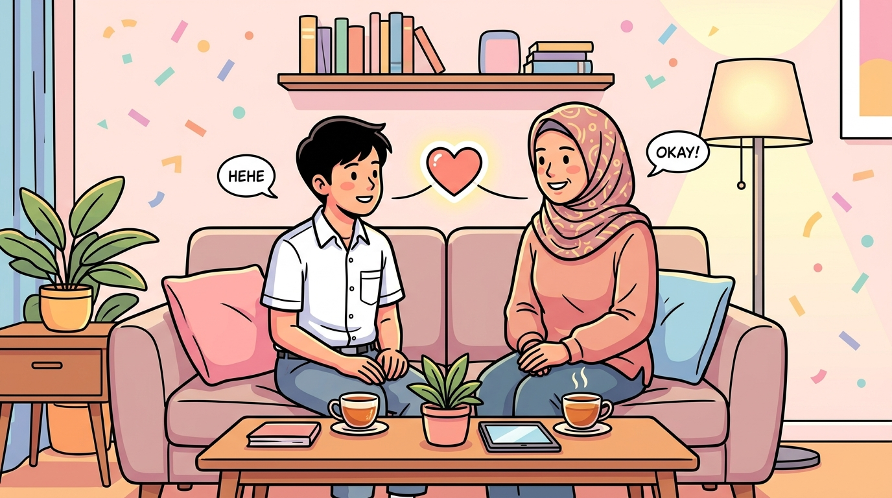
Bab khusus ini didedikasikan bagi para orang tua, guru, dosen, dan pembina remaja. Kunci utama mendampingi remaja bukan memberi ceramah searah berjam-jam, melainkan menjadi pendengar yang aman, tenang, dan tidak menghakimi.
Daftar rujukan kurikulum dan data riset resmi Kemenkes RI, Kemdikbudristek, WHO, SKI, dan SDKI.
Seluruh materi, panduan, dan data statistik dalam buklet KESPRO EXCELLENCE edisi ramah remaja ini disusun dan diverifikasi mengacu pada dokumen rujukan resmi pemerintah dan badan kesehatan terkemuka.
Kamu telah menuntaskan seluruh 30 bab panduan komprehensif Kespro Space!
Edukasi kesehatan reproduksi adalah bekal kecerdasan hidup (*life skills*) agar kamu mandiri, selamat dari risiko pergaulan bebas, dan berdaya penuh.
Panduan ilmiah, jujur, dan berempati untuk menyongsong kedewasaan dengan percaya diri dan bermartabat.
Masa pubertas adalah fase transformasi paling dinamis dalam kehidupan setiap anak muda. Lonjakan hormon, perubahan fisik yang drastis, serta rasa ingin tahu seputar relasi dan seksualitas sering kali menimbulkan kebingungan. Di tengah derasnya arus informasi media sosial dan mitos yang menyesatkan, remaja membutuhkan panduan yang jujur, ilmiah, dan menenteramkan.
Buku ini menghadirkan rujukan kesehatan reproduksi yang ramah, objektif, dan bebas tabu. Mengupas tuntas proses biologis kedewasaan, cara membangun batasan diri yang sehat (*consent*), mengenali relasi pacaran sehat, hingga langkah nyata melindungi diri dari berbagai risiko dan kekerasan seksual.